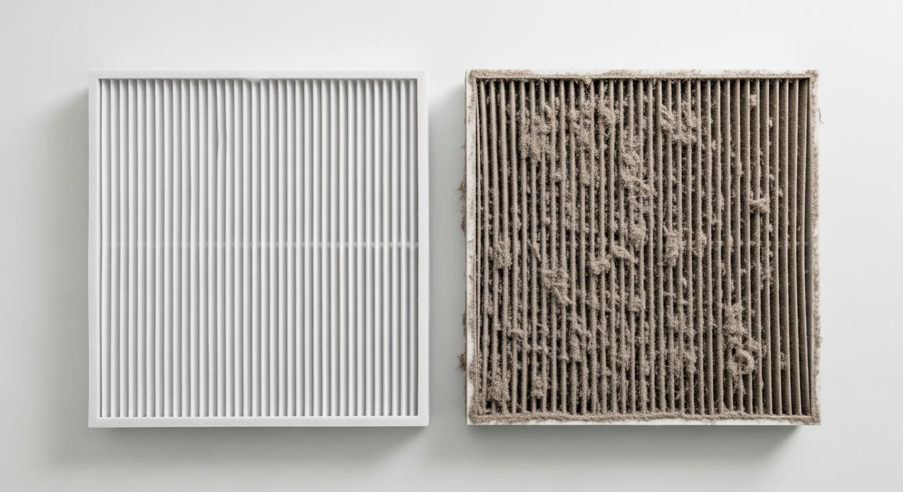

WTW-onderhoud: hoe vaak en waarom het essentieel is
Inhoudsopgave
- Wat is een WTW-systeem?
- Waarom onderhoud essentieel is
- Hoe vaak moet een WTW onderhouden worden?
- Wat gebeurt er bij professioneel onderhoud?
- Signalen dat je WTW onderhoud nodig heeft
- Zelf doen vs. laten doen
- Onderhoudscontract: zorgeloos en voordelig
- Veelgestelde vragen
- Conclusie
Wat is een WTW-systeem?
Een WTW (warmteterugwinning) is een ventilatiesysteem dat verse buitenlucht naar binnen brengt en tegelijkertijd de warmte uit de afgevoerde binnenlucht hergebruikt. Het resultaat: frisse lucht zonder warmteverlies. In moderne woningen is een WTW-systeem vrijwel standaard vanwege de strenge isolatie-eisen.
Maar een WTW werkt alleen optimaal als het onderhouden wordt.
Waarom onderhoud essentieel is
Een WTW-systeem draait 24 uur per dag, 365 dagen per jaar. Het filtert stof, pollen en fijnstof uit de buitenlucht en voert vochtige, vervuilde binnenlucht af. Zonder onderhoud:
- Verstopte filters verminderen de luchtstroom met 30-50%
- Vervuilde warmtewisselaar verlaagt het rendement — je betaalt meer stookkosten
- Ophoping van vocht en vuil leidt tot schimmelvorming in de kanalen
- Draaiende ventilatoren met stofophoping maken meer geluid en slijten sneller
- Sensoren raken vervuild waardoor het systeem harder draait dan nodig
De kosten van niet-onderhouden
Een vervuild WTW-systeem verbruikt tot 15% meer energie. Op jaarbasis kan dat €100-€200 extra stookkosten betekenen. Voeg daar de kosten van een vroegtijdige vervanging bij (€2.000-€4.000 voor een nieuw systeem) en onderhoud is de goedkoopste investering die je kunt doen.
Hoe vaak moet een WTW onderhouden worden?
De richtlijn is:
| Handeling | Frequentie |
|---|---|
| Filters vervangen | Elke 3-6 maanden |
| Warmtewisselaar reinigen | 1x per jaar |
| Ventilatoren controleren | 1x per jaar |
| Kanalen inspecteren | 1x per 3-5 jaar |
| Professioneel groot onderhoud | 1x per jaar |
Filters: de eerste lijn van verdediging
Filters zijn het makkelijkste en belangrijkste onderdeel. De meeste WTW-systemen hebben twee filters: een voor de toevoerlucht (buitenlucht) en een voor de afvoerlucht (binnenlucht). Vervang ze elke 3 tot 6 maanden, afhankelijk van de omgeving (nabij een drukke weg = vaker).

Wat gebeurt er bij professioneel onderhoud?
Een professionele onderhoudsbeurt door Kooijman Installaties omvat:
- Filters vervangen met de juiste specificatie voor jouw systeem
- Warmtewisselaar demonteren en reinigen — de kern van het systeem
- Ventilatoren controleren op slijtage, balans en geluidsproductie
- Luchtdebieten meten — kloppen de instellingen nog met de woning?
- Afvoerkanalen controleren op vervuiling of condensproblemen
- Condensafvoer reinigen — een verstopte afvoer leidt tot lekkage
- Systeem opnieuw instellen op optimale waarden
Signalen dat je WTW onderhoud nodig heeft
Herken je een van deze signalen? Plan dan onderhoud in:
- Meer geluid dan normaal — ventilatoren werken harder door vuil
- Muffe geur bij de ventilatieroosters — filters zijn verzadigd
- Condens op de ramen ondanks draaiende ventilatie — onvoldoende afvoer
- Hogere stookkosten — warmteterugwinning is minder efficiënt
- Stofneerslag rond ventilatieroosters — filters laten stof door
Zelf doen vs. laten doen
Filters vervangen kun je zelf — de meeste systemen hebben eenvoudig toegankelijke filterhouders. Maar het reinigen van de warmtewisselaar, het meten van luchtdebieten en het controleren van kanalen vereist vakkennis en meetapparatuur.
Kooijman Installaties is gespecialiseerd in WTW-onderhoud voor alle merken en typen. We werken in heel Nederland en bieden onderhoudscontracten voor zorgeloos onderhoud.
Onderhoudscontract: zorgeloos en voordelig
Met een onderhoudscontract hoef je er niet aan te denken. Wij plannen het jaarlijkse onderhoud in, leveren de juiste filters en brengen je systeem weer op topniveau. Voordelen:
- Vaste prijs per jaar — geen verrassingen
- Voorrang bij storingen
- Langere levensduur van je WTW-systeem
- Altijd de juiste filters op voorraad
Veelgestelde vragen
Wat kost professioneel WTW-onderhoud?
Een jaarlijkse onderhoudsbeurt kost tussen de €120 en €200, afhankelijk van het type systeem en de bereikbaarheid. Een onderhoudscontract is voordeliger bij meerdere jaren.
Hoe lang gaat een WTW-systeem mee?
Met goed onderhoud gaat een WTW-systeem 15-20 jaar mee. Zonder onderhoud kan de levensduur halveren.
Kan ik elke WTW-filter gebruiken?
Nee. Gebruik altijd filters die voldoen aan de specificatie van je systeem. Verkeerde filters verminderen de filtratie of beperken de luchtstroom.
Conclusie
WTW-onderhoud is geen luxe maar noodzaak. Een goed onderhouden systeem bespaart energie, verlengt de levensduur en zorgt voor gezonde binnenlucht. Filters zelf vervangen is eenvoudig; voor een grondige onderhoudsbeurt schakelt u een specialist in.
Wilt u uw WTW-systeem laten controleren? Neem contact op met Kooijman Installaties via onze website of bel ons direct.
Laat uw WTW-systeem controleren door een specialist
Kooijman Installaties verzorgt professioneel onderhoud aan alle typen WTW-systemen. Wij werken door heel Nederland en bieden altijd een heldere offerte vooraf. Neem vandaag nog contact op.

Prinses Beatrixstraat 20
3441 XK Woerden
Laat uw WTW-systeem controleren door een specialist
Kooijman Installaties verzorgt professioneel onderhoud aan alle typen WTW-systemen. Wij werken door heel Nederland en bieden altijd een heldere offerte vooraf. Neem vandaag nog contact op.
Offerte Aanvragen